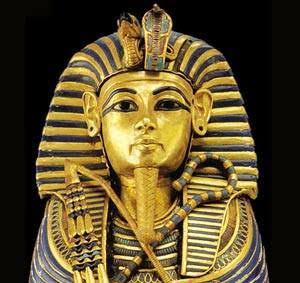
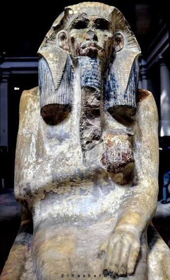
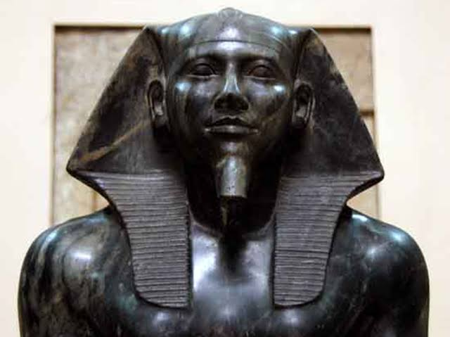
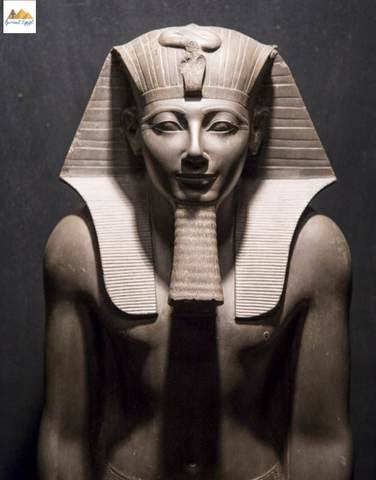

Step into the dawn of civilization, where the Nile gave life to a legendary empire. The Pharaonic era represents thousands of years of architectural brilliance, divine kingship, and cultural innovation that shaped the ancient world forever. From the unification of the Two Lands to the golden age of the New Kingdom, explore the stories of the mighty rulers who built the pyramids and carved their names into eternity
Menes 3100 BC (1st Dynasty)
Known as the unifier of Upper and Lower Egypt, Narmer is the founder of the First Dynasty. He is immortalized on the Narmer Palette, which depicts his victory and the beginning of the centralized Egyptian state

King Djoser 2670 BC (3rd Dynasty)
Djoser is most famous for commissioning the Step Pyramid at Saqqara, the world’s first large-scale stone structure. His reign marked a major turning point in Egyptian architecture and royal burial traditions under the guidance of his architect, Imhotep

King Khufu 2580 BC (4th Dynasty)
The builder of the Great Pyramid of Giza, the only surviving wonder of the ancient world. Khufu’s reign represents the pinnacle of Old Kingdom engineering and absolute royal power, leaving behind a legacy that still puzzles historians today

King Thutmose III 1479–1425 BC (18th Dynasty)
Often called the "Napoleon of Ancient Egypt," Thutmose III was a brilliant military strategist. He conducted 17 successful campaigns, expanding the Egyptian Empire to its greatest territorial extent, from Syria to the Fourth Cataract of the Nile
